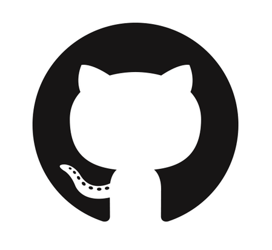

CV Sergey Moroz
 +38(096)397-09-99
+38(096)397-09-99
 sergeymoroz0307@gmail.com
sergeymoroz0307@gmail.com
 sergeymorozgaf
sergeymorozgaf
SergeyMoroz0703
QA Engineer position
- Education
-
Kiev Polytechnic Institute, Kiev (2009-2014)
Master: Physical Materialize Science
QATestLab (2013)
QA Engineering
- Skills
-
- English – intermediate
- Experience in Selenium 2.0 (Python), pytest.
- Experience in Postgres, MySQL, linux, bash scripting, Vesion Control (Git);
- Understanding of SDLC and bug lifecycles;
- Knowledge and experience of creation Test Cases, Test Planes, Bug Reports, Checklists
- Understanding of different types of testing;
- Writing and understanding of Test Documentation;
- Understanding of SDLC and bug lifecycles;
- OS: Linux (Ubuntu), Linux server (Debian, Ubuntu), Windows
- Bug Tracking System: good skills in Redmine, GitLab, basic Jira
- Experience
-
Technical SupportGoAntiFraud (August 2015-September2016)
- Monitoring an enterprise infrastructure via various tools and open proper tickets with the appropriate information for a quick resolution
- Quickly and efficiently address customer needs by providing solutions to customer issues or escalating to another support group when necessary
- Working with TCP/IP, HTTP/HTTPS and internet protocols
- Maintaining, managing and monitoring remote servers running Linux
Head Of Technical Support GoAntiFraud (August 2015-September2016)
- Team Management (about 10 people)
- Monitoring and administration different Linux servers
- Develop and testing users owner development (AGI,AMI scripting using Python, Bash)
- Writing testing documentation, manual for user's specific development
- Testing new front/back functional using Selenium Webdriver (Python)
- Analyze users data and optimize service functional
- System stability monitoring, setup (Zabbix)
- Personal qualities
- Team Management (about 10 people)
- Attentive to detail, scrupulous
- Fully adapted to learning
- Responsible, own organizational skills
- I appreciate the work in a friendly team and be subordinate
- References
- Available on request